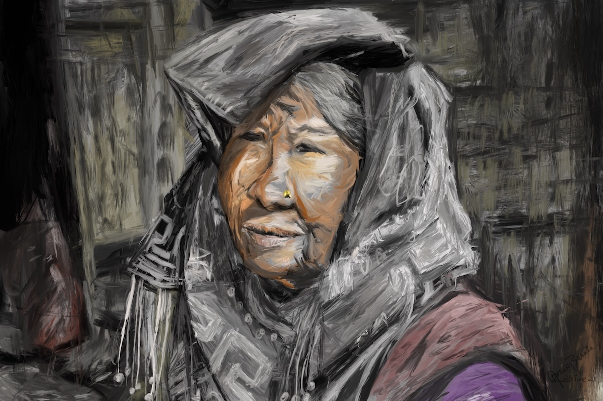
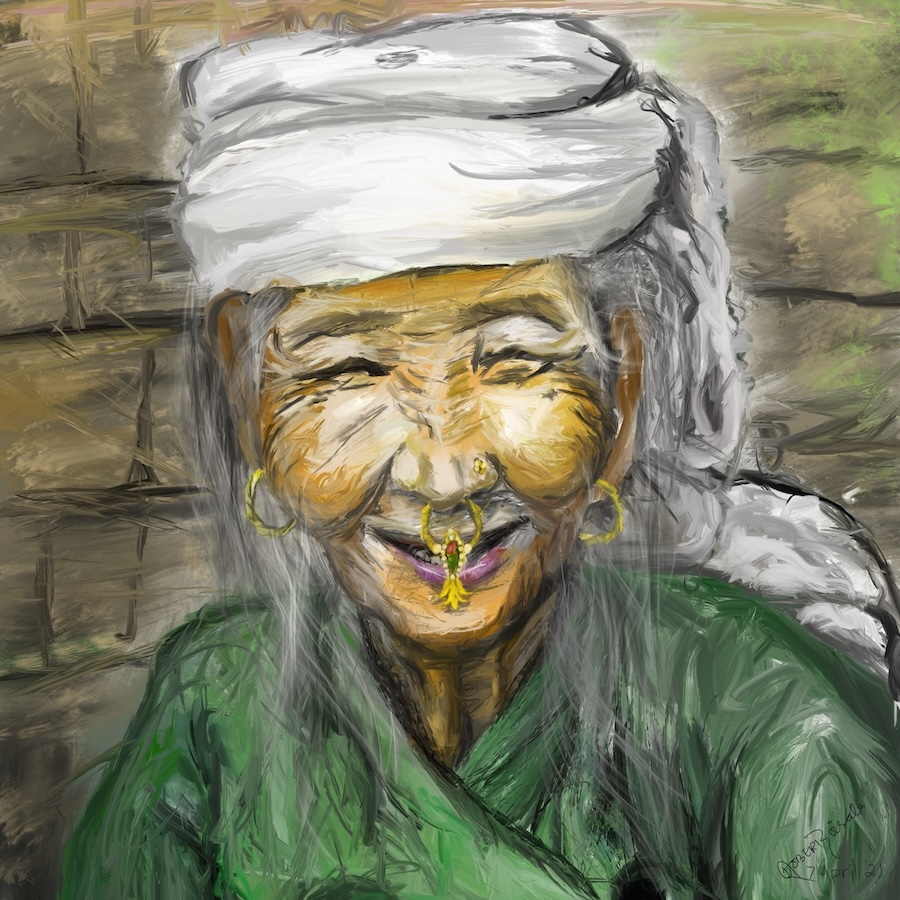
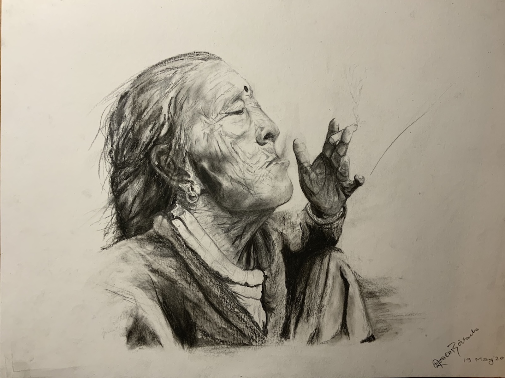

आमा
This series is dedicated to my grandmother and her friends. Through बुलकी (Bulaki), I had an opportunity to study bulaki, a nasal ornament, that I saw my grandma's friends wear. In पर्खाई (Waiting), I have tried to reflect the emotions of all mothers who wait for their children to come back home. आमा (Grandmother) is what I remember of my grandma.


